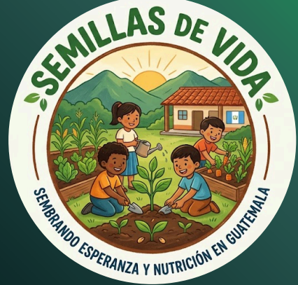
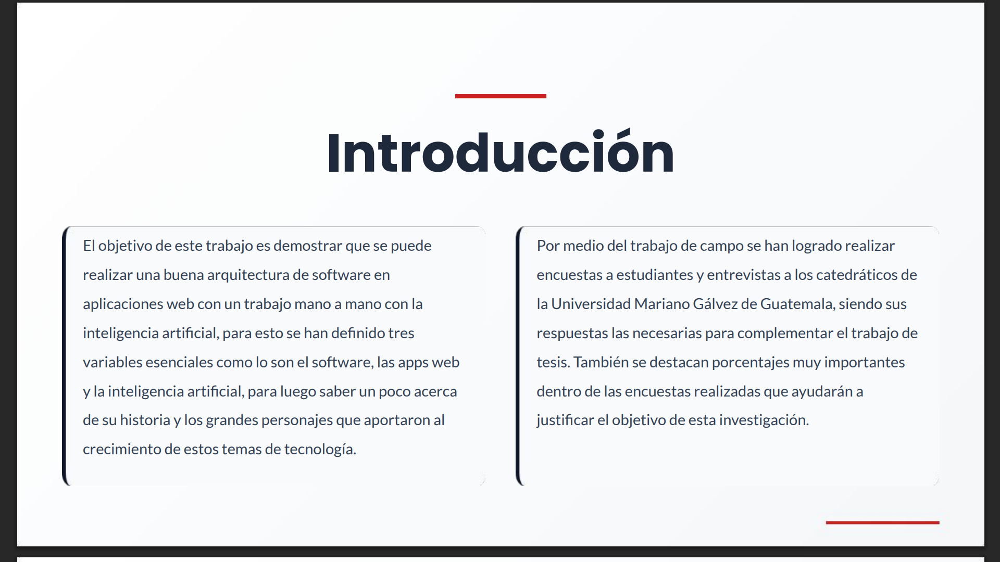
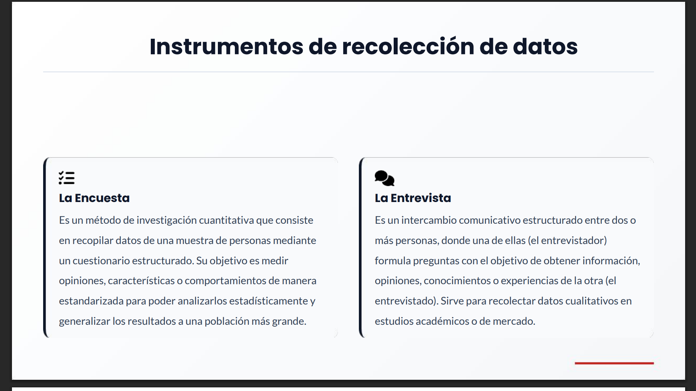
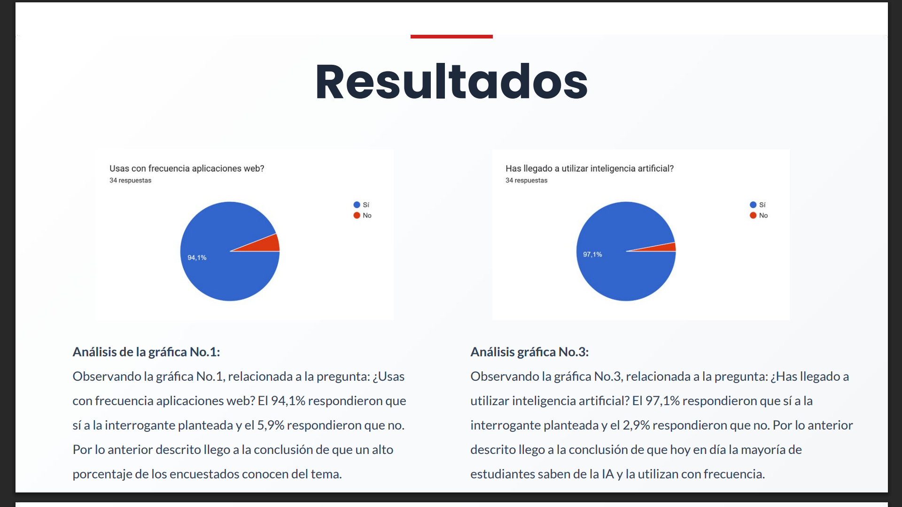
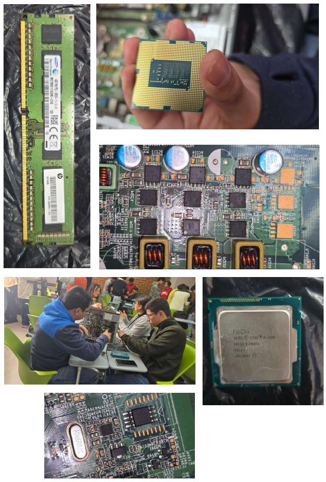
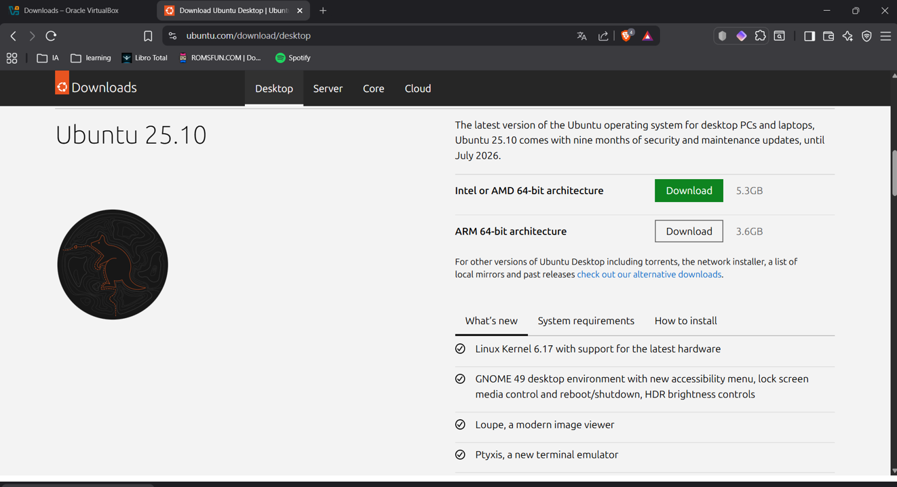
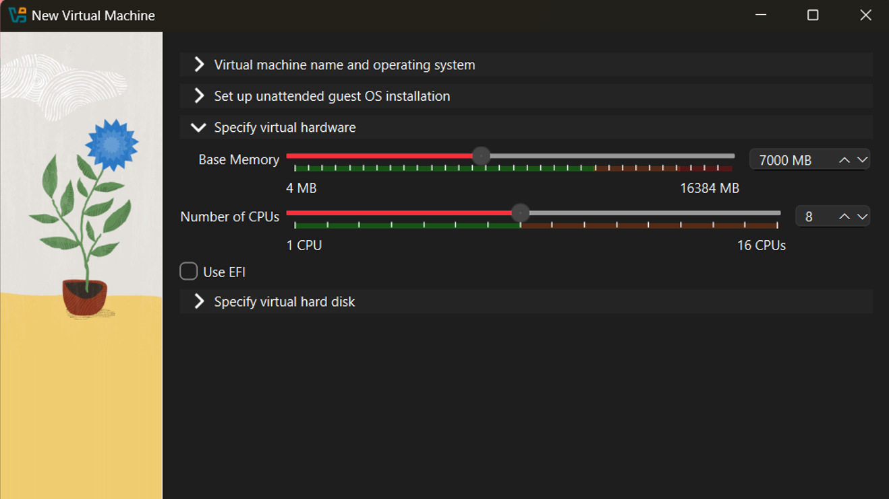
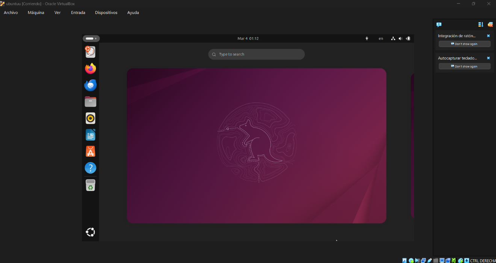
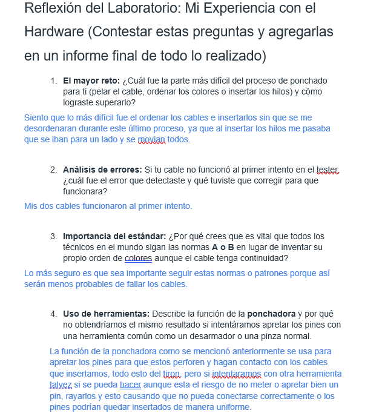
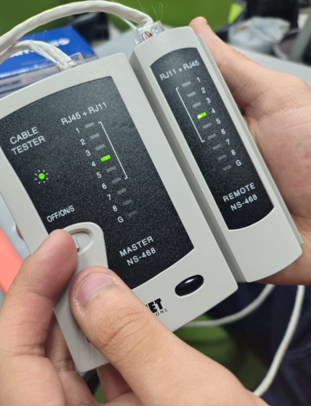

Mis Proyectos por Curso
Desarrollo Humano y Profesional
Entidad de apoyo (proyecto grupal)
Se planteó la idea de un proyecto creativo en el cual se realizaría una campaña de apoyo benéfico, esta fue ficticia, pero nos permitió desarrollar una gran ayuda a orfanatos que poseen escasos recursos en el país, impulsando la creación y fortalecimiento de parcelas agrícolas en los orfanatos, proporcionando materiales necesarios y conocimiento para el cuidado de las parcelas y la buena alimentación para los niños.

Metodología de la Investigación
Elaboración de tesis (proyecto individual)
Se está llevando a cabo una elaboración de tesis con un tema en específico, estamos a punto de terminar el proyecto. Ya se realizó el trabajo de campo con las encuestas y entrevistas solicitadas y estamos iniciando con la presentación de la tesis para exposiciones externas.



Contabilidad
Creación de sociedad mercantil ficticia (proyecto grupal)
Por medio de una sociedad colectiva (S.C.) estamos realizando una empresa distribuidora de café a nivel nacional, teniendo ya una directiva, el inventario, libro diario y mayor finalizados.
Introducción a los Sistemas de Cómputo
Mantenimiento preventivo de computadoras (proyecto grupal)
Se llevó un ordenador que ya no fuera utilizado para práctica de un mantenimiento preventivo en el cual se realizó una bitácora acerca del estado del ordenador, los componentes que poseía, así como su marca/modelo y luego se prosiguió a hacer una limpieza a profundidad de cada uno de estos componentes y el case. También se realizó un cambio de pasta térmica al procesador, al finalizar se volvieron a montar los componentes, cerrar el case y limpiarlo por fuera. Por último, cada integrante del grupo investigó por 10 elementos de la motherboard.

Instalación de Ubuntu (proyecto individual)
Se realizó la instalación desde VirtualBox de la versión más reciente de la distro Ubuntu, en la cual se configuró los núcleos que utilizaría, la RAM y el almacenamiento que le proporcionábamos. Dentro del sistema operativo, vimos cómo se veía, las opciones que tenía y un vistazo rápido a la terminal (bash).



Cables de red (proyecto individual)
Aprendí a crear cables de red de configuración "A" y "B", dentro del proyecto vimos la disposición de cada cable según la configuración que quisiera realizar. Realicé dos cables, uno de configuración "B" a "B" y otro de configuración "A" a "B", el cable era categoría 5.


Configuración de una red LAN (proyecto grupal)
En un grupo de 3, aprendimos a realizar conexiones entre nuestras computadoras por medio de los cables creados en el proyecto anterior, para luego poder probar conectividad entre cada laptop por medio de CMD y también la creación de archivos compartidos para los usuarios de la misma red.


Red LAN en Cisco Packet Tracer (proyecto individual)
Simulación de una red local dentro del programa Packet Tracer el cual constaba de diagramar una casa de 3 pisos en la cual por cada nivel había distintos dispositivos (laptops, ordenadores, tablets, impresoras) con distintos tipos de conexión.


Bases de datos (proyecto individual)
Se realizó por medio de XAMPP y MySQL Workbench tres bases de datos, una gestión de una biblioteca, un control de inventario en una tienda y una red social. Para cada caso se realizaron diagramas ER, se insertaron 3 registros por cada tabla de cada uno, se generaron los scripts de las bases de datos, se pasaron y crearon en PHPMyAdmin y se visualizaron en el diseñador de este.


Lógica de Sistemas
Circuitos Lógicos y Álgebra de Boole
Diseño y simulación de circuitos lógicos complejos mediante la aplicación de lógica proposicional, lógica de conjuntos y álgebra de Boole para la resolución de problemas aplicados a la vida real.